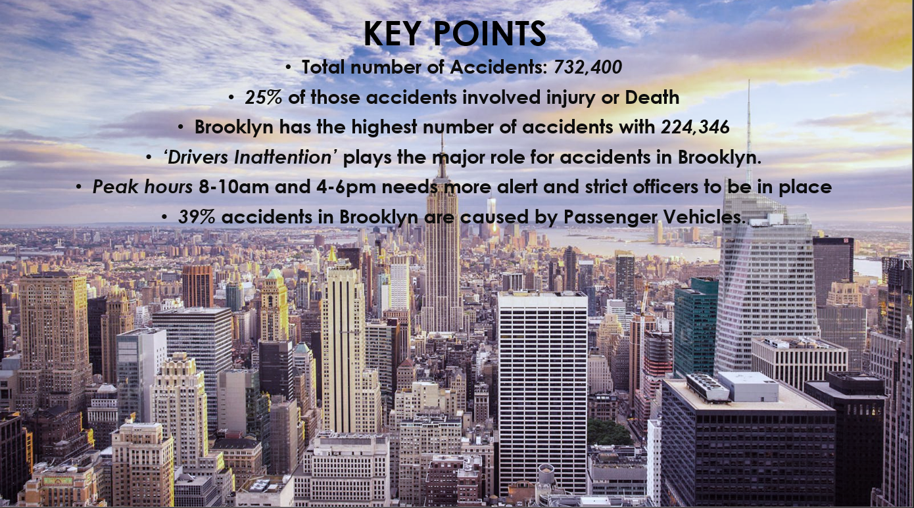

Exploring NYC Vehicle Crash Data
Summary

Approximately 8.2 million people live within the five boroughs that make up New York City. Every year, thousands of accidents occur due to a multitude of contributing factors. NYPD collects information about each of those accidents and provides it for public use on nycopendata.socrata.com. We decided to explore the crash data to see if there were any underlying trends and relationships that could explain the number of accidents occurring. The data contained over 600,000 observations from July 2012 to July 2015. We chose to exclude August 2015 data, given we didn’t have the full month of data.